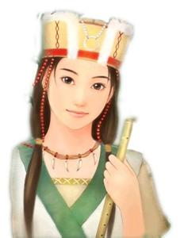
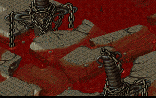

《仙剑奇侠传》是由大宇资讯所制作的一款国产单机中文角色扮演电脑游戏。本作是《仙剑奇侠传》系列的第一部作品，主题是“宿命”，于1995年7月发行。
游戏讲述了平凡的客栈小伙计李逍遥因为机缘巧合结识了女娲族后裔赵灵儿。赵灵儿所居之仙灵岛意外遭人袭击，李逍遥遂担任起护送灵儿往苗疆寻母的重任。在旅程中，李逍遥先后结识了林月如、阿奴。在赵灵儿帮助苗人祈雨解旱、惩奸除恶的过程之中，赵灵儿的身世之谜以及她母亲的下落，也终究水落石出。此时，拜月教主的阴谋摆在众人的眼前，李逍遥、赵灵儿等人却不知这与拜月教主一战，将会铸成一段永恒的悲剧。
-
李逍遥
|
姓名：李逍遥
年龄：19岁
武器：长剑、刀
角色介绍：小渔村中的店小二，由婶婶含辛茹苦扶养长大，在客栈中英雄，好汉见多得了，一心想做除暴安良的正义游侠。命带桃花，初闯江湖即与三名女主角产生一段难分难解的四角恋情。
98柔情篇人物诗词：
翩翩潇洒美少年，灵岛求药结仙缘。
千里崎岖不辞苦，仗剑江湖为红颜。
|
-
赵灵儿
|
姓名：赵灵儿
年龄：16岁
武器：双剑、双刀、单剑、法杖
角色介绍：自幼与世隔绝，宛若池中白莲的脱俗少女，跟随姥姥隐居仙灵岛修炼，躲避仇人的追杀。难以告人的神秘身世，让她逃不过命运的捉弄，注定在滚滚红尘中历尽千灾万劫。
人物诗词：
仙灵岛上别洞天，池中孤莲伴月眠。
一朝风雨落水面，愿君拾得惜相怜。 |
-
林月如
|
姓名：林月如
年龄：18岁
武器：长鞭、剑、刀
角色介绍：南武林盟主林天南之女，任性刁蛮的女剑侠，凭着家传绝技，放眼江南未逢敌手。只因身为女儿身，不能竞逐盟主之位，不得已设擂台比武招亲，挑选英雄少年入赘林家。
人物诗词：
刁蛮少女贵千金，比武招亲动芳心。
盼能与君长相依，结伴江湖侠侣行。 |
-
阿奴
|  |
姓名：阿奴
年龄：14岁
武器：弯刀、法杖
角色介绍：白苗族的族长之女，个性刁钻活泼，甫出场便将李逍遥耍得团团转，对她毫无招架之力。外表一派天真烂漫，施用巫术毒蛊的手段，却叫人毛骨悚然。
人物诗词：
如花苗女鬼灵精，喜逢君子初尝情。
落花有意结连理，伴月愿做一颗星。 |
除《新仙剑奇侠传》、《新仙剑奇侠传电视剧纪念XP版》有三个游戏结局之外，其余游戏版本只有一个结局:
- 原版结局:
拜月被打败后，强行与水魔兽合体，造成南诏国洪水滔天。灵儿履行她女娲族的使命，为拯救天下苍生，手持天蛇杖飞上半空，凝聚全身力量，毅然向水魔兽冲去。霎时间，一团白光照亮天地，灵儿与水魔兽同归于尽。洪水退去，而受灾后的南诏国，却只剩下断壁残垣。天空放晴，在金色的阳光下，天蛇杖缓缓而落。天蛇杖在阳光中闪闪发光，却久久不见灵儿归来，逍遥悲痛欲绝。落日的余辉下，逍遥辞别阿奴，踏上返乡之路。一缕笛音传至整个山间，阿奴黯然神伤地吹笛为他送行，也送走了她的心。风雪茫茫，逍遥举步为艰。迷茫间，远远看见雪中的一棵大树下，一个熟悉的身影在默默守候。原来是月如手撑一伞，怀抱忆如，深情地望着逍遥，等待着他归来。
- 新仙剑灵儿结局：
拜月被打败后，强行与水魔兽合体，造成南诏国洪水滔天。灵儿履行她女娲族的使命，为拯救天下苍生，手持天蛇杖飞上半空，封印拜月，毅然向水魔兽冲去，水魔兽被消灭。而受灾后的南诏国，却只剩下断壁残垣。在落日的余辉映照中，天蛇杖缓缓而落，阳光照在天蛇杖上，逍遥在高崖上等待着灵儿归来，微风拂过，逍遥和灵儿深情地对望着。
八年后的仙灵岛上，李忆如正在和小草妖玩捉迷藏，而水月宫里李大娘则正为找不到调皮捣蛋的小忆如而着急生气。水月宫外，逍遥和灵儿回忆着往昔，不禁感慨万千，逍遥说只愿永远和灵儿厮守在一起。后来淘气的忆如回来，父女俩斗嘴，灵儿劝。忆如回到房间拿出了她画的李氏全家福：爹、娘、婶婆和忆如，一家人其乐融融。 - 新仙剑月如结局：
（之前内容与正常结局相同）八年后的一天，已继任蜀山仙剑派掌门的李逍遥回到苏州林家堡探亲，李忆如却忽然被人绑走！逍遥紧追至隐龙窟蛇妖府内，发现一高一矮两位蒙面女子。蒙面人口气不小，但含糊其辞，逍遥识破两名蒙面人是忆如与丫鬟所扮，显得很生气。不料，八年前因逍遥而入狱的扬州女飞贼姬三娘突然出现，还企图再次勾引逍遥。后来才知，姬三娘竟是林月如假扮的！原来，月如和忆如责怪李逍遥担任蜀山掌门以来，很久没有回去看她们，误以为他忘了她俩。两人一气之下，装成女贼，计划恶整逍遥。三人在欢笑中和解，逍遥答应月如与忆如，大家以后永不分离。

《仙剑奇侠传DOS版》：1995年7月10日出品（故常被称作“仙剑95版”），由大宇资讯狂徒创作群制作，是影响了整整一代玩家的游戏大作。发布有磁盘版和光盘版，但由于磁盘容量不足，因此有进行删减。本作自面世以来就长盛不衰，在游戏史上以惊人的生命力屹立十多年不倒。感人的剧情、动情的音乐、还有那优雅的诗词至今仍让老一辈的玩家难以忘怀。游戏的主角李逍遥、赵灵儿、林月如、阿奴，也成了游戏界的明星人物。游戏的总策划兼编剧姚壮宪也被誉为“仙剑之父”。美中不足的是，最初的DOS版游戏中法术、道具等缺乏说明。虽然有人认为《仙剑奇侠传》的巨大成功在后来客观上阻碍了其他国产游戏的创新和发展，但毫无疑问的是，《仙剑奇侠传》是中国游戏史上一座重要的里程碑。
《仙剑奇侠传Windows95版》、《仙剑奇侠传98柔情篇》：也就是真正的“仙剑95版”，1997年出品。仙剑98柔情篇是大宇于同年在大陆推出的仙剑Win95版之相应简体版，首发于1997年10月，这一版本也是在中国大陆流传得最广的仙剑一。游戏画面看上去和DOS版并无太多区别；增加了数个AVI动画；增加了四首CD音轨，背景音乐由DOS内默认的FM音源（即RIX格式）变为MIDI格式。部分迷宫地图作了一定简化，少量对白被更改，我方法术习得等级降低、BOSS生命降低。此外，所有道具加入了文字说明，这一点是非常实用的改进。 |